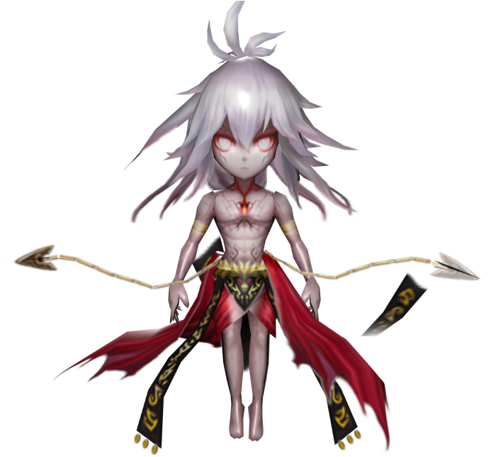
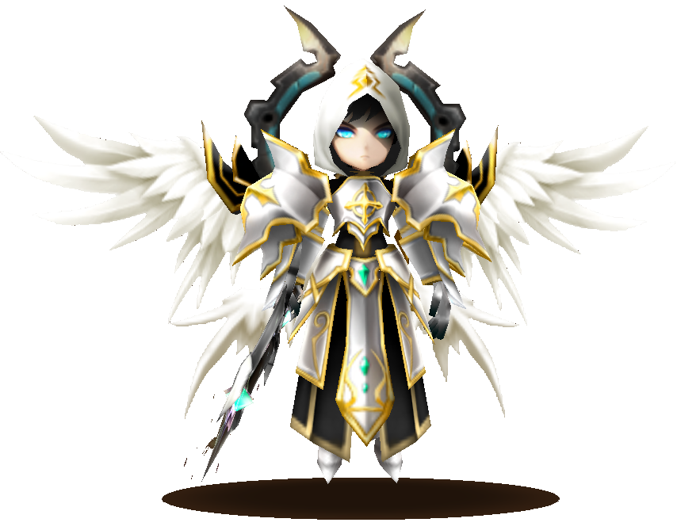

Summoners War: Sky Arena (La Guerre des invocateurs : L'Arène céleste) est un jeu vidéo mobile type stratégie au tour par tour en ligne créé par l'éditeur Coréen Com2us. Le jeu est disponible gratuitement sur iOS et Android. Il s'appuie sur un système de tour à tour, où des monstres s'affrontent dans plusieurs modes de jeu (joueurs contre joueurs ou joueurs contre l'ordinateur).

Un RPG fantasy plein d’action qui a su captiver plus de 100 millions d’invocateurs à travers le monde ! Entre dans l'Arène céleste, un monde en guerre pour le contrôle d'une ressource vitale : les pierres de mana ! Invoque plus de 1 000 monstres différents et mesure-toi à des joueurs du monde entier ! Crée tes stratégies et combinaisons de monstres ! Rassemble la meilleure équipe pour remporter la victoire ! Summoners War : l'Arène céleste Communauté : https://www.facebook.com/Summonersfr/

Le SWC est un tournoi de e-sport organisé tous les ans par Com2us. Des joueurs du monde entier s'affrontent à cette occasion. La finale du SWC 2019 s'est déroulée à Paris le 26 octobre 2019 et a été remportée par le joueur chinois Lest qui a remporté la somme de 100 000$.